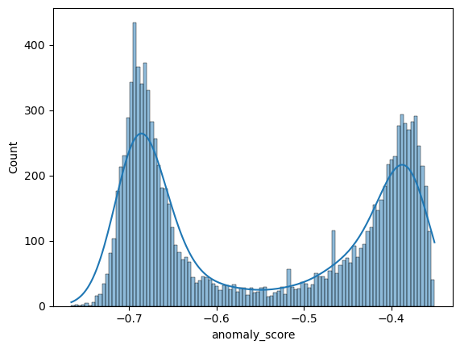
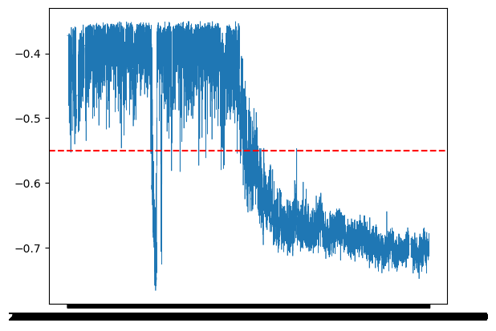
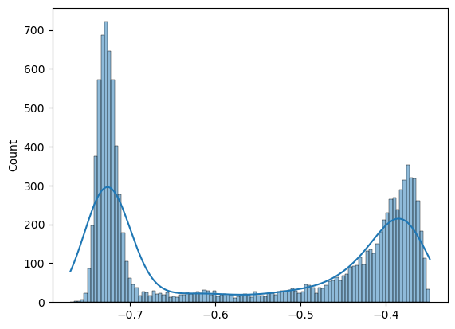
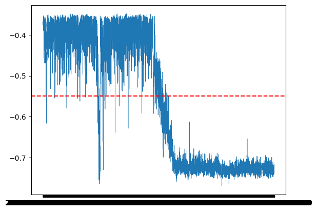

import pandas as pdIsolation forest
Isolation Forest for Bridge SHM
Anomaly detection on the KW51 railway bridge dataset using Isolation Forest
Importing the necessary libraries
import pandas as pdimporting pandas which helps in loading and visualising data set and manupulating dataset
Introduction
The KW51 railway bridge dataset was obtained from Maes and Lombaert, KU Leuven. It contains data collected over a 15-month monitoring campaign between 2018 and 2019, covering pre-damage, retrofitting, and post-repair periods.
Traditional bridge inspections are manual and not always reliable. Structural Health Monitoring (SHM) addresses this by installing sensors directly on the bridge that continuously record its behaviour. In our case, the sensors record 14 natural frequencies of the bridge along with environmental variables such as temperature, wind speed, and humidity.
When a bridge sustains damage, its natural frequencies shift. By detecting anomalies in these frequency readings, we can flag potential structural damage automatically without manual inspection.
In this notebook, we apply Isolation Forest — an unsupervised machine learning method — to detect these anomalies in the KW51 dataset.
df = pd.read_csv(r'E:\SHM_ML\data\cleaned\cleaned_data.csv', index_col=0) # loading data saved earlierdf| f3 | f5 | f6 | f9 | f10 | f11 | f12 | f13 | tBD31A | rhBD31A | tVL | rhVL | vpVL | raVL | wsVL | wdVL | |
|---|---|---|---|---|---|---|---|---|---|---|---|---|---|---|---|---|
| timestamp | ||||||||||||||||
| 2018-10-01 00:00:00 | 1.892065 | 2.591636 | 2.919671 | 4.104634 | 4.292805 | 4.806421 | 5.324662 | 6.310306 | 10.100000 | 81.000000 | 10.825000 | 89.333336 | 1159.144738 | 0.0 | 9.40 | 293.00 |
| 2018-10-01 01:00:00 | 1.892065 | 2.591636 | 2.919671 | 4.104634 | 4.292805 | 4.806421 | 5.324662 | 6.310306 | 10.000000 | 85.000000 | 10.241667 | 92.750000 | 1157.524605 | 0.1 | 10.30 | 295.00 |
| 2018-10-01 02:00:00 | 1.892065 | 2.591636 | 2.919671 | 4.104634 | 4.292805 | 4.806421 | 5.324662 | 6.310306 | 9.900000 | 91.000000 | 10.150000 | 92.000000 | 1141.142430 | 0.0 | 10.40 | 284.00 |
| 2018-10-01 03:00:00 | 1.892065 | 2.591636 | 2.919671 | 4.104634 | 4.292805 | 4.806421 | 5.324662 | 6.310306 | 9.800000 | 89.000000 | 10.166666 | 91.083336 | 1131.033604 | 0.3 | 11.60 | 296.00 |
| 2018-10-01 04:00:00 | 1.892065 | 2.591636 | 2.919671 | 4.104634 | 4.292805 | 4.806421 | 5.324662 | 6.310306 | 9.800000 | 90.000000 | 9.558333 | 93.166664 | 1110.625906 | 0.2 | 9.60 | 283.00 |
| ... | ... | ... | ... | ... | ... | ... | ... | ... | ... | ... | ... | ... | ... | ... | ... | ... |
| 2020-01-15 19:00:00 | 1.888801 | 2.555565 | 2.986277 | 4.078602 | 4.386448 | 4.942893 | 5.440576 | 6.436793 | 9.641429 | 83.304917 | 8.386441 | 83.342373 | 918.137648 | 0.0 | 1.96 | 200.08 |
| 2020-01-15 20:00:00 | 1.887610 | 2.586921 | 2.982070 | 4.080208 | 4.386448 | 4.940309 | 5.426145 | 6.398893 | 9.143141 | 80.168936 | 7.545000 | 84.875000 | 882.549401 | 0.0 | 1.51 | 187.83 |
| 2020-01-15 21:00:00 | 1.886253 | 2.581889 | 2.987133 | 4.078480 | 4.386448 | 4.908271 | 5.432978 | 6.410531 | 8.795149 | 82.076947 | 6.301667 | 89.455000 | 853.705976 | 0.0 | 1.07 | 199.95 |
| 2020-01-15 22:00:00 | 1.888356 | 2.566954 | 2.987248 | 4.080275 | 4.386448 | 4.940258 | 5.449368 | 6.425065 | 8.367961 | 83.432317 | 5.583333 | 93.038333 | 845.126865 | 0.0 | 0.91 | 204.28 |
| 2020-01-15 23:00:00 | 1.871882 | 2.566954 | 2.987134 | 4.077780 | 4.386448 | 4.940258 | 5.449368 | 6.425065 | 7.936330 | 85.265024 | 5.486667 | 92.815000 | 837.557894 | 0.0 | 0.90 | 201.26 |
11328 rows × 16 columns
We need to show it the time period when the bridge was normal
df_normal = df['2018-10-01':'2019-04-30']
X = df_normal[["f3", "f5", "f6", "f9", "f10", "f11", "f12", "f13"]]
X.head()| f3 | f5 | f6 | f9 | f10 | f11 | f12 | f13 | |
|---|---|---|---|---|---|---|---|---|
| timestamp | ||||||||
| 2018-10-01 00:00:00 | 1.892065 | 2.591636 | 2.919671 | 4.104634 | 4.292805 | 4.806421 | 5.324662 | 6.310306 |
| 2018-10-01 01:00:00 | 1.892065 | 2.591636 | 2.919671 | 4.104634 | 4.292805 | 4.806421 | 5.324662 | 6.310306 |
| 2018-10-01 02:00:00 | 1.892065 | 2.591636 | 2.919671 | 4.104634 | 4.292805 | 4.806421 | 5.324662 | 6.310306 |
| 2018-10-01 03:00:00 | 1.892065 | 2.591636 | 2.919671 | 4.104634 | 4.292805 | 4.806421 | 5.324662 | 6.310306 |
| 2018-10-01 04:00:00 | 1.892065 | 2.591636 | 2.919671 | 4.104634 | 4.292805 | 4.806421 | 5.324662 | 6.310306 |
print(X.shape)(5064, 8)from sklearn.ensemble import IsolationForest
model = IsolationForest(
n_estimators=100,
max_samples=256,
contamination=0.1,
random_state=42
)
model.fit(X)IsolationForest(contamination=0.1, max_samples=256, random_state=42)In a Jupyter environment, please rerun this cell to show the HTML representation or trust the notebook.
On GitHub, the HTML representation is unable to render, please try loading this page with nbviewer.org.
Parameters
X_full_freq = df[["f3", "f5", "f6", "f9", "f10", "f11", "f12", "f13"]]
# Get anomaly scores for every point
# more negative = more anomalous in sklearn's convention
scores = model.score_samples(X_full_freq)
print(scores)[-0.37231947 -0.37231947 -0.37231947 ... -0.68006987 -0.69265924
-0.70920119]Get labels — sklearn returns -1 for anomaly, 1 for normal
labels = model.predict(X_full_freq)
labelsarray([ 1, 1, 1, ..., -1, -1, -1], shape=(11328,))results = pd.DataFrame(X_full_freq, columns=["f3", "f5", "f6", "f9", "f10", "f11", "f12", "f13"])
results['anomaly_score'] = scores
results['label'] = labelsresults| f3 | f5 | f6 | f9 | f10 | f11 | f12 | f13 | anomaly_score | label | |
|---|---|---|---|---|---|---|---|---|---|---|
| timestamp | ||||||||||
| 2018-10-01 00:00:00 | 1.892065 | 2.591636 | 2.919671 | 4.104634 | 4.292805 | 4.806421 | 5.324662 | 6.310306 | -0.372319 | 1 |
| 2018-10-01 01:00:00 | 1.892065 | 2.591636 | 2.919671 | 4.104634 | 4.292805 | 4.806421 | 5.324662 | 6.310306 | -0.372319 | 1 |
| 2018-10-01 02:00:00 | 1.892065 | 2.591636 | 2.919671 | 4.104634 | 4.292805 | 4.806421 | 5.324662 | 6.310306 | -0.372319 | 1 |
| 2018-10-01 03:00:00 | 1.892065 | 2.591636 | 2.919671 | 4.104634 | 4.292805 | 4.806421 | 5.324662 | 6.310306 | -0.372319 | 1 |
| 2018-10-01 04:00:00 | 1.892065 | 2.591636 | 2.919671 | 4.104634 | 4.292805 | 4.806421 | 5.324662 | 6.310306 | -0.372319 | 1 |
| ... | ... | ... | ... | ... | ... | ... | ... | ... | ... | ... |
| 2020-01-15 19:00:00 | 1.888801 | 2.555565 | 2.986277 | 4.078602 | 4.386448 | 4.942893 | 5.440576 | 6.436793 | -0.713427 | -1 |
| 2020-01-15 20:00:00 | 1.887610 | 2.586921 | 2.982070 | 4.080208 | 4.386448 | 4.940309 | 5.426145 | 6.398893 | -0.678131 | -1 |
| 2020-01-15 21:00:00 | 1.886253 | 2.581889 | 2.987133 | 4.078480 | 4.386448 | 4.908271 | 5.432978 | 6.410531 | -0.680070 | -1 |
| 2020-01-15 22:00:00 | 1.888356 | 2.566954 | 2.987248 | 4.080275 | 4.386448 | 4.940258 | 5.449368 | 6.425065 | -0.692659 | -1 |
| 2020-01-15 23:00:00 | 1.871882 | 2.566954 | 2.987134 | 4.077780 | 4.386448 | 4.940258 | 5.449368 | 6.425065 | -0.709201 | -1 |
11328 rows × 10 columns
import seaborn as sns
import matplotlib.pyplot as plt
scores = results['anomaly_score']
sns.histplot(scores, bins=106, kde=True)
plt.show()
print((results['anomaly_score'] < -0.55).sum())
print(len(results))5821
11328Okay so looking at the above histogram we see that it is a bimodal distribution, firstly we can see that the it is on the negative x axis which is just the convention of sk learn now moving on it looks like nearly half of the data is below -0.5 whic means that the model is flagging half of the data as anomalies which is not good but there is a reason as i understand for it, the environmental exogenous variables were not taken into consideration, since with the enviroment like temperature the naturual frequencies change and the model is flagging that changne as an anomaluy aswell which will be taken care of below
plt.plot(results.index, results['anomaly_score'], linewidth=0.5)
plt.axhline(y=-0.55, color='red', linestyle='--', label='threshold')
plt.show()
Alright so plot above is off the anomaly scores that we calculated and it is clearly visible hey value drops after around -0.55 and it stays below that for the rest of the time now that is actually the time. Where the retrofitting was done where the damage was and there is one more thing to notice and that is the value never goes above -0.55 after that and that is because after retrofitting the bridge the frequencies the natural frequencies change so now the new normal is something different than what it was before
X_full_freq| f3 | f5 | f6 | f9 | f10 | f11 | f12 | f13 | |
|---|---|---|---|---|---|---|---|---|
| timestamp | ||||||||
| 2018-10-01 00:00:00 | 1.892065 | 2.591636 | 2.919671 | 4.104634 | 4.292805 | 4.806421 | 5.324662 | 6.310306 |
| 2018-10-01 01:00:00 | 1.892065 | 2.591636 | 2.919671 | 4.104634 | 4.292805 | 4.806421 | 5.324662 | 6.310306 |
| 2018-10-01 02:00:00 | 1.892065 | 2.591636 | 2.919671 | 4.104634 | 4.292805 | 4.806421 | 5.324662 | 6.310306 |
| 2018-10-01 03:00:00 | 1.892065 | 2.591636 | 2.919671 | 4.104634 | 4.292805 | 4.806421 | 5.324662 | 6.310306 |
| 2018-10-01 04:00:00 | 1.892065 | 2.591636 | 2.919671 | 4.104634 | 4.292805 | 4.806421 | 5.324662 | 6.310306 |
| ... | ... | ... | ... | ... | ... | ... | ... | ... |
| 2020-01-15 19:00:00 | 1.888801 | 2.555565 | 2.986277 | 4.078602 | 4.386448 | 4.942893 | 5.440576 | 6.436793 |
| 2020-01-15 20:00:00 | 1.887610 | 2.586921 | 2.982070 | 4.080208 | 4.386448 | 4.940309 | 5.426145 | 6.398893 |
| 2020-01-15 21:00:00 | 1.886253 | 2.581889 | 2.987133 | 4.078480 | 4.386448 | 4.908271 | 5.432978 | 6.410531 |
| 2020-01-15 22:00:00 | 1.888356 | 2.566954 | 2.987248 | 4.080275 | 4.386448 | 4.940258 | 5.449368 | 6.425065 |
| 2020-01-15 23:00:00 | 1.871882 | 2.566954 | 2.987134 | 4.077780 | 4.386448 | 4.940258 | 5.449368 | 6.425065 |
11328 rows × 8 columns
Now we are going to separate the frequency data
from sklearn.linear_model import LinearRegression
freq_cols = ["f3", "f5", "f6", "f9", "f10", "f11", "f12", "f13"]
env_cols = ["tBD31A", "rhBD31A", "tVL", "rhVL", "vpVL", "raVL", "wsVL", "wdVL"]
df_normal = df['2018-10-01':'2019-04-30']
env_train = df_normal[env_cols]
env_full = df[env_cols]
X_train_freq = df_normal[freq_cols]
X_full_freq = df[freq_cols]
models = {}
for freq in freq_cols:
model_reg = LinearRegression()
model_reg.fit(env_train, X_train_freq[freq])
models[freq] = model_reg
# Predict expected frequencies for entire dataset and compute residuals
residuals = pd.DataFrame(index=df.index)
for freq in freq_cols:
predicted = models[freq].predict(env_full)
residuals[freq] = X_full_freq[freq] - predictedresiduals.head()| f3 | f5 | f6 | f9 | f10 | f11 | f12 | f13 | |
|---|---|---|---|---|---|---|---|---|
| timestamp | ||||||||
| 2018-10-01 00:00:00 | -0.002384 | 0.010922 | -0.002991 | -0.003000 | -0.005017 | -0.033447 | 0.001274 | -0.003689 |
| 2018-10-01 01:00:00 | -0.002009 | 0.010912 | -0.003032 | -0.003032 | -0.004975 | -0.034366 | 0.001635 | -0.002621 |
| 2018-10-01 02:00:00 | -0.001527 | 0.011409 | -0.003273 | -0.002959 | -0.005244 | -0.035869 | 0.001092 | -0.002829 |
| 2018-10-01 03:00:00 | -0.000815 | 0.010957 | -0.003060 | -0.002686 | -0.005116 | -0.032029 | 0.001324 | -0.002780 |
| 2018-10-01 04:00:00 | -0.000833 | 0.011488 | -0.003085 | -0.002918 | -0.005253 | -0.035003 | 0.001854 | -0.002424 |
Train Isolation Forest on residuals from normal period only
residuals_normal = residuals.loc[df_normal.index]
model_corrected = IsolationForest(
n_estimators=100,
max_samples=256,
contamination=0.1,
random_state=42
)
model_corrected.fit(residuals_normal)
# Predict on full residuals
scores_corrected = model_corrected.score_samples(residuals)
labels_corrected = model_corrected.predict(residuals)
results_corrected = residuals.copy()
results_corrected['anomaly_score'] = scores_corrected
results_corrected['label'] = labels_correctedsns.histplot(scores_corrected, bins=106, kde=True)
plt.show()
plt.plot(results_corrected.index, results_corrected['anomaly_score'], linewidth=0.5)
plt.axhline(y=-0.55, color='red', linestyle='--', label='threshold')
plt.show()
from sklearn.metrics import r2_score, mean_squared_error
for freq in freq_cols:
predicted = models[freq].predict(env_train)
actual = X_train_freq[freq]
r2 = r2_score(actual, predicted)
mse = mean_squared_error(actual, predicted)
print(f"{freq}: R² = {r2:.4f}, MSE = {mse:.6f}")f3: R² = 0.0824, MSE = 0.000074
f5: R² = 0.0306, MSE = 0.000235
f6: R² = 0.4003, MSE = 0.000042
f9: R² = 0.4615, MSE = 0.000017
f10: R² = 0.3443, MSE = 0.000206
f11: R² = 0.0433, MSE = 0.001333
f12: R² = 0.2669, MSE = 0.000583
f13: R² = 0.4015, MSE = 0.001136The R² values — the best one is f9 at 0.46, meaning even the best case linear regression only explains 46% of the frequency variation using environmental variables. For f3 and f5 it is explaining less than 10%. This is poor. Linear regression is not capturing the relationship well at all.
from sklearn.metrics import r2_score, mean_squared_error
normal_mask = results.index <= '2019-04-30'
damage_mask = results.index > '2019-04-30'
print("Before environmental correction:")
print(f"Normal period anomaly rate: {(results.loc[normal_mask, 'label'] == -1).mean()*100:.1f}%")
print(f"Damage period anomaly rate: {(results.loc[damage_mask, 'label'] == -1).mean()*100:.1f}%")
print(f"Mean score (normal): {results.loc[normal_mask, 'anomaly_score'].mean():.4f}")
print(f"Mean score (damage): {results.loc[damage_mask, 'anomaly_score'].mean():.4f}")
print(f"Separation: {results.loc[normal_mask, 'anomaly_score'].mean() - results.loc[damage_mask, 'anomaly_score'].mean():.4f}")Before environmental correction:
Normal period anomaly rate: 10.0%
Damage period anomaly rate: 94.3%
Mean score (normal): -0.4146
Mean score (damage): -0.6523
Separation: 0.2376print("\nAfter environmental correction:")
print(f"Normal period anomaly rate: {(results_corrected.loc[normal_mask, 'label'] == -1).mean()*100:.1f}%")
print(f"Damage period anomaly rate: {(results_corrected.loc[damage_mask, 'label'] == -1).mean()*100:.1f}%")
print(f"Mean score (normal): {results_corrected.loc[normal_mask, 'anomaly_score'].mean():.4f}")
print(f"Mean score (damage): {results_corrected.loc[damage_mask, 'anomaly_score'].mean():.4f}")
print(f"Separation: {results_corrected.loc[normal_mask, 'anomaly_score'].mean() - results_corrected.loc[damage_mask, 'anomaly_score'].mean():.4f}")
After environmental correction:
Normal period anomaly rate: 10.0%
Damage period anomaly rate: 94.3%
Mean score (normal): -0.4076
Mean score (damage): -0.6860
Separation: 0.2785Effect of Environmental Correction on Anomaly Detection
Isolation Forest assigns an anomaly score to each observation. More negative = more anomalous. We compare scores from two runs:
- Without correction — Isolation Forest on raw frequencies directly
- With correction — Isolation Forest on residuals after removing environmental effects via Linear Regression
The key metric is separation: difference between mean score in the normal period (before May 2019) and the damage period (after May 2019). Higher separation means the model distinguishes the two periods more clearly.
| Metric | Without Correction | With Correction |
|---|---|---|
| Normal period anomaly rate | 10.0% | 10.0% |
| Damage period anomaly rate | 94.3% | 94.3% |
| Mean score (normal) | -0.4146 | -0.4076 |
| Mean score (damage) | -0.6523 | -0.6860 |
| Separation | 0.2376 | 0.2785 |
Environmental correction improved separation by 17%. The damage period scores are pushed further negative after correction, meaning the model is more confident about flagging the post-retrofit period as anomalous. The normal period remains stable, so the improvement is not coming from false positives — it is coming from cleaner signal in the damage period.